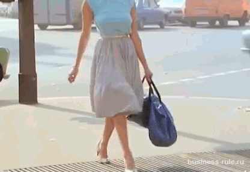
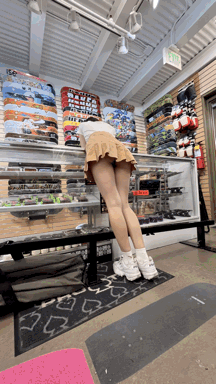

Топ 30 гифок девушек засветившие свои трусики под юбкой
Добро пожаловать в топ 30 gif анимаций девушек в коротких юбках, которые засветили своими трусиками. Данная подборка будет регулярно пополняться новыми изображениями. Ведь по счасливой случайности в интернете полно прекрасных девушек, которые попались на объектив камер и засветили свои трусики. Посмотрите большую подборку гиф анимаций красивых девушек в юбках и трусиках.
1. Девушка танцует и приподнимает юбку, показывая нам свои трусики гиф анимация
2. Девушка нагнулась в короткой юбке в чулках и засветила трусики gif

3. Увереной походкой идет по кабинету в короткой юбке и держит в руках ракетку скачать гифку бесплатно
4. Молодая и привлекательная девушка в чулках и юбке кружиться, от чего поднялась юбка и показались трусики
5. Подняла платье чтобы показать свою прекрасную фигуру

6. Вентилятор приподнял у девушки юбку

7. Прохожие увидели у идущей девушке по улице трусики под юбкой. Ветер вовремя подул на нее

Скачать
8. Поднимается по лестнице и прохожий заснял у нее под юбкой трусики. Скрытая камера

9. Симпатичная девушка кружиться в короткой черной юбке и засветила свои белоснежные трусики
10. Подняла юбку и засветила стринги под ними
11. Девушка в автобусе засветила своими кружевными трусиками под юбкой
12. У нее под юбкой красивые женские трусики. Гифка вид снизу
13. Приподняла свою юбку

14. Красивые трусики у девушке под юбкой. Нагнулась и показала вид снизу свои трусы
15. Скрытая камера сняла идущую на улице симпатичную девушку в юбке. У нее прекрасные белые трусики. Как вам?
16. Девушка специально нагнулась в юбочке, показав свои трусики и прекрасную попку.
17. По телевизору на теле передаче девушка засветила свои трусики под юбкой. Она нагнулась и красивые виды попали в кадр.
18. Скрытая камера засняла девушку на светофоре у которой выпало что-то из рук. И она в спешке решила это поднять, тем самым спалиться на камеру
19. Скрытая камера проследила за девушкой в короткой юбке, чтобы заснять ее трусики под юбкой. Красивая?
20. У девушке в короткой юбочке в метро на ветру поднялась юбка, из которой выглядывает отличная фигурка в трусиках
21. В коротком сарафане идет по улице и ветере показал ее трусики под ним
22. Спускаясь по подземному переходу она не думала что за ней подглядывают. Из под юбки виднеются красивые трусики стринги
23. Девушка поднимается по леснице в короткой юбке, а за ней наблюдает скрытая камера. Прекрасный вид из под юбки, с красивыми трусиками.
24. За девушкой следит скрытая камера. Она засняла в магазине с корзинке прекрасные трусики под ее юбкой.
25. Слежка за женщиной в короткой юбке.
26. Нагнулась в магазине в короткой юбочке.

{kind=link}
{kind=link}
{kind=link}
{kind=link}
{kind=link}
{kind=link}
{kind=link}
{kind=link}
{kind=link}
{kind=link}
{kind=link}
{kind=link}
{kind=link}
{kind=link}
{kind=link}
{kind=link}
{kind=link}
{kind=link}
{kind=link}
{kind=link}
27. На кассе в очень короткой юбке светит трусами.

Скачать
{kind=link}